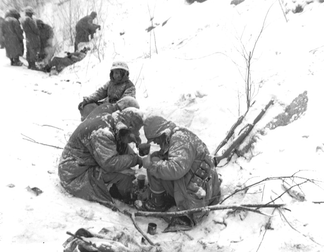

Directions: Study the photograph and the background, then answer the questions.

Background. In the autumn of 1950 the Korean War changed twice. After the landing at Inchon in September, United Nations forces crossed the 38th parallel and drove toward the Yalu River to unify Korea by force. China, whose warnings had been discounted, attacked in force on November 25 with hundreds of thousands of troops. Around the Chosin Reservoir, about 120,000 Chinese troops surrounded some 30,000 United Nations troops in subzero cold. The Marines in the photograph fought their way south to the sea. By the summer of 1951 the front had settled near the 38th parallel, where it stayed until the armistice of July 27, 1953.
1. What is happening in the photograph, and where and when was it taken? Name the force surrounding the men in the photograph, using the background.
2. The men at the reservoir were there because the war's aim had changed in October 1950. State the original aim of the war and the aim that replaced it.
3. NSC-68 was written in April 1950, before the invasion. State the two shocks of 1949 that stood behind it, and the buildup it called for.
4. It is April 1951. A classmate says General MacArthur was dismissed because he was losing the war. Correct the statement, naming what MacArthur wanted, what Truman refused, and the principle Truman defended.
1. What is happening in the photograph? Exhausted Marines of the 1st Marine Division are resting during the fighting at the Chosin Reservoir in Korea in December 1950, in the breakout that followed the Chinese intervention of November 25, 1950. The surrounding force was Chinese: about 120,000 Chinese troops surrounded some 30,000 United Nations troops around the reservoir in subzero cold. (Blueprint 4)
2. State the original aim and the aim that replaced it. The original aim was to preserve a non-Communist South Korea by repelling the North Korean invasion of June 25, 1950. After Inchon and the retaking of Seoul, United Nations forces crossed the 38th parallel in October 1950 and the aim became the unification of Korea by force, driving to the Yalu River. That change brought China into the war. (Blueprint 4)
3. State the two shocks behind NSC-68, and its call. The Soviet Union tested its first atomic bomb on August 29, 1949, ending the American monopoly, and Mao Zedong proclaimed the People's Republic of China on October 1, 1949 after winning the Chinese civil war. NSC-68, the secret planning paper finished in April 1950, described the Cold War as a global struggle and called for a large buildup of American military strength, with defense spending rising to roughly three times its current level. (Blueprint 3)
4. Correct the statement about MacArthur's dismissal. MacArthur was not dismissed for losing. He was relieved on April 11, 1951 because he pressed in public for a wider war against China, including a blockade of the Chinese coast, bombing of bases in Manchuria, and the use of Nationalist troops. Truman refused each step in order to keep the war a limited war, and defended the dismissal as the price of civilian control of the military: commanders must be governed by the policies issued to them under the Constitution. (Blueprint 3 and Blueprint 4)
Teacher note. This check is formative. Question 2 is the entry diagnostic: students who cannot name the October change of aim will read the Chinese intervention as an unprovoked surprise rather than as an answer to a decision, which is the reading the activity ledger is built to correct. Question 4 predicts success on the writing task, because it requires the limited war argument in both directions, what the general wanted and what the president defended.